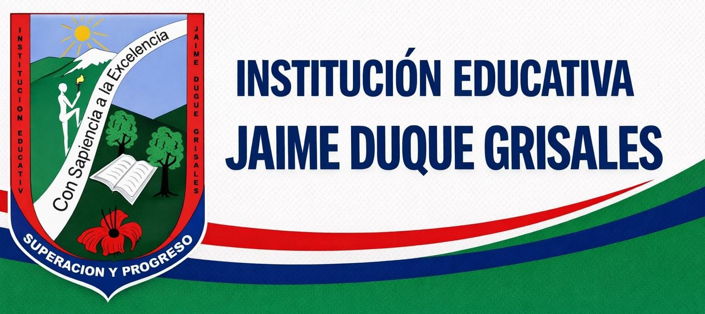

Campus Virtual Jaime Duque Grisales
El objetivo de esta página web es mantener informada a toda la comunidad educativa sobre todas las novedades y noticias que ocurran dentro de la institución. En la Institución Educativa Jaime Duque Grisales se presenta un problema de falta de comunicación e información clara sobre los eventos, actividades y avisos importantes del colegio. Esto afecta a estudiantes, docentes y padres de familia, ya que muchas veces no se enteran a tiempo de reuniones, cambios de horario o actividades escolares. Por esta razón, se propone esta página web tipo noticiero escolar que permite informar de manera organizada, rápida y oficial todo lo que ocurra en la institución, fomentar la lectura a través de una biblioteca virtual y recibir reclamos y felicitaciones mediante un buzón de sugerencias virtual.